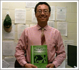
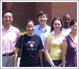
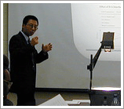

|
Sam-Shajing Sun, Ph.D.
Professor of Chemistry and Materials Science
Head, Organic and Polymeric Materials Research Labs
Director, Center for Organic Photonic Materials Research
Director, Center for Research and Education in Advanced Materials

Brief Biography
Dr. Sun obtained his B.S. degree in
physical chemistry from Peking University (Beijing, China), his M.S. degree in
inorganic/analytical/Nuclear chemistry from California State University
(Northridge, California), and his Ph.D. degree in organic/polymer/materials
chemistry from the University of Southern California (Los Angeles, California,
1996). After a postdoctoral appointment at the Loker Hydrocarbon Research
Institute at USC, Dr. Sun joined the Chemistry Department and the Center for
Materials Research (CMR) at Norfolk State University as a tenure-track faculty
member in spring of 1998, and he was promoted to associate (tenured) professor
in the spring of 2002.
Dr. Sun is currently a member and a
technical referee in a number of international scientific societies, including
the International Society for Optical Engineering (SPIE), Materials Research
Society (MRS), American Chemical Society (ACS), Optical Society of America (OSA),
International Solar Energy Society (ISES), American Solar Energy Society (ASES),
World Renewable Energy Network (WREN), American Institute of Aerospace and
Aeronautics (AIAA), American Association for the Advancement of Science (AAAS),
etc.

Research Expertise and Interests
Professor Sun's research expertise and interests include the design,
synthesis, processing, characterization, and modeling of novel organic and
polymeric solid state nano structured and supramolecular materials and thin
films devices for electronic, photonic, magnetic, and energy applications.
Prof. Sun’s research group is currently investigating and developing novel
polymeric materials with unique supra-molecular nano structures and
functional groups, for instance, unique conjugated donor-bridge-acceptor
dipolar molecular orientation or supramolecular order (such as in nonlinear
optical polymers), unique donor-bridge-acceptor block copolymer nanophase
separated structures (such as in organic opto-electronic, photovoltaic or
solar cell devices).
Academic and Professional Activities
Since joining Norfolk State University (NSU) in 1998, Prof. Sun has established
from scratch a state-of-the-art organic and polymeric materials research program
and labs at NSU. In addition to regular classroom teaching of undergraduate and
graduate courses including "General Chemistry", "Organic Chemistry", "Advanced
Organic Chemistry", “Chemistry Seminars”, "Polymers", "Special Topics",
"Advanced Research", "MS Thesis" at NSU chemistry department and materials
science graduate program, Prof. Sun is also supervising an organic and polymeric
advanced materials research group consisting of 2-3 research faculty/associates,
3-7 graduate students, and a number of undergraduate students. Recently,
Professor Sun has founded and is directing a "Center for Organic Photonic
Materials Research" or "COPMR" which also includes research groups of
Prof. Carl
E. Bonner (Optical Laser Spectroscopy), Prof. Rakhim Rakhimov (Electron Spin
Resonance Spectroscopy) and other collaborators. The "COPMR" projects focus
mainly on polymeric optoelectronic materials and devices.
Current research
projects mainly include development of novel supra-molecular and nano structured
conjugated block copolymer systems for potential photo detector and solar energy
conversion (solar cell) applications. Most recently, Prof. Sun has edited a CRC
Press’s new book titled "Organic Photovoltaics: Mechanisms, Materials and
Devices" (ISBN 0-82475-963-X.
Book Details). This book has contributions from over 60 prominent scientists/experts in the
field around the globe. Professor Sun is also collaborating with faculty members
and scientists around the country and the world. The optoelectronic polymer
research and educational projects that Prof. Sun is currently leading have been
supported by the university, the Dozoretz Foundation, and particularly by a
number of federal government agencies including NASA, Department of Defense (BMDO/MDA,
AFOSR), Department of Energy, and Department of Education.
One exciting news
is
that NASA has awarded a "Center for Research and Education in Advanced
Materials" or "CREAM" to NSU where Professor Sun's photovoltaic materials
research and educational projects play a key role. Prof. Sun is now also leading
this center project. Professor Sun has been very active in publishing and
presenting in scientific communities in the area of organic and polymeric
functional electro-active materials and thin film devices.
Prof. Sun had also
been invited for many volunteer professional duties, these include refereeing
technical publications for professional societies including ACS, MRS, SPIE;
Elsevier, reviewing proposals for agencies such as NSF, NASA, CRDF and Canada
Council for the Arts, reviewing textbooks such as "Organic Chemistry". At NSU,
Professor Sun has been awarded a number of honors or titles by his colleagues
and supervisors, these include "Outstanding Mentor", "Outstanding Scholar",
"Outstanding Grantsmanship", "Researcher of the Year", etc. Most recently,
Professor Sun was awarded the 2005-2006 ‘Eminent Scholar’ of NSU.
Some representative publications relevant to organic/polymeric electro-active materials.
-
-Sun, S. and Sariciftci,
S., eds., Organic Photovoltaics: Mechanisms, Materials and Devices,
CRC Press, Boca Raton, Florida, 2005 (ISBN 0-82475-963-X).
-
-Sun, S.
et al.,
“Chapter 8: Optimizations of Organic Solar Cells in Both Space and
Energy/Time Domains”, in Organic Photovoltaics: Mechanisms, Materials and
Devices, edited by Sun and Sariciftci, CRC Press, Boca Raton, Florida,
2005, pp183-214.
- -Sun, S., et al.,
“Synthesis and Characterization of a New Acceptor (N-type) Fluorinated and
Terminal Functionalized Polythiophene”, J. Poly. Sci. (A) Poly. Chem.,
43, 4280-4287 (2005).
- -Sun, S.; et al.
“Organic Solar Cell Optimizations”, J. Mater. Sci.,
40, 1429-1443 (2005).
- -Sun, S., “Optimal Energy
Offsets for Organic Solar Cells Containing a Donor/Acceptor Pair”, Sol.
Energy Mater. Sol. Cel., 85, 261-267 (2005).
- -Sun, S.; et al.,
“Morphological Effects to Carrier Mobility in a RO-PPV/SF-PPV Donor/Acceptor
Binary Thin Film Opto-electronic Device”, Mater. Sci. & Eng. B, 116,
279-282 (2005).
- -Sun, S., “Optimal energy levels for organic donor/acceptor binary
photovoltaic materials and solar cells”, Mater. Sci. & Eng., B, 116,
251-256 (2005).
- -Sun, S.; “Polymer Morphology and Energy Levels Versus Photoelectric Power
Conversion Efficiencies: A Preliminary Account”, in Organic Photovoltaics
V, SPIE, 5520, 126-135 (2004).
- -Sun, S.;
et al.,
“Fumaryl Chloride and Maleic Anhydride Derived Crosslinked Functional
Polymers for NLO Waveguide Applications”, J. Appl. Poly. Sci., 92,
317-322 (2004).
- -Sun, S., “Design of a
Block Copolymer Solar Cell”, Sol. Energy Mater. Sol. Cel., 79, 257
(2003).
- -Sun, S. et al.,
“Conjugated Block Copolymers for Opto-Electronic Functions”, Syn. Met.,
137, 883-884 (2003).
- -Sun, S., et al.,
“Synthesis and Characterization of a Novel -DBAB- Type Block Copolymer
System for Light Harvesting Applications”, SPIE, 4801, 114-124
(2003).
- -Sun, S., et al., “Chapter 2: Fumaryl Chloride and Maleic Anhydride
Derived Crosslinked Functional Polymers and Nano Structures”, in Functional Condensation Polymers, eds., C. Carraher and G. Swift, Kluwer
Academic Press, New York, 2002, pp 17-30.
- -Sun, S., et al., “Recent Development of Crosslinked NLO Polymers for
Large Bandwidth Electro-Optical Modulations”, SPIE, 4580, 297-308
(2002).
- -Sun, S., et al., “Design and Synthesis of Novel Block Copolymers for
Efficient Opto-Electronic Applications”, SPIE, 4465, 121-128 (2002).
- -Sun, S.,
et al., “Electrically Conductive Semi-IPNs Based on
Polyaniline and Crosslinked Polyvinylacetate”, J. Appl. Poly. Sci.,
85(11), 2287-2293 (2002).
- -Sun, S., et al., “Synthesis and Characterization of
1,3-bis(dicyanomethylidene)indane (BDMI)-based nonlinear optical polymers”,
Polymer, 39(20), 4977 (1998).
- -Sun, S., et al., “Translating Microscopic Optical Nonlinearity into
Macroscopic Optical Nonlinearity: the role of chromophore-chromophore
electrostatic interactions”, J. Opt. Soc. Am. (B)., 15(1), 329
(1998).
- -Sun, S., et al.,”1,3-Bis(dicyanomethylidene) indane-Based
Second-Order NLO Materials”, Chem. Matter., 8, 2539 (1996).
-Sun, S.; et al.,
“Processible and Thermally Stable Heterocyclic Polymers for Second-Order
Nonlinear Optical Studies”, Chem. Matter., 8, 2681 (1996).
|
 |
 |
 |
|
click for larger view |
click for larger view |
click for larger view |
|
| Professor Sun with his
new book "Organic Photovoltaics: Mechanisms, Materials and Devices". |
Prof. Sun’s
Organic/Polymeric Materials Research Group (Summer 2004) |
Professor Sun was
hosting/presiding a national conference for the Consortium on Advancing
Renewable Energy Technology (CARET) at NSU in September 2000. |
|